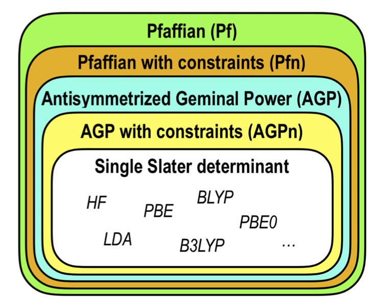
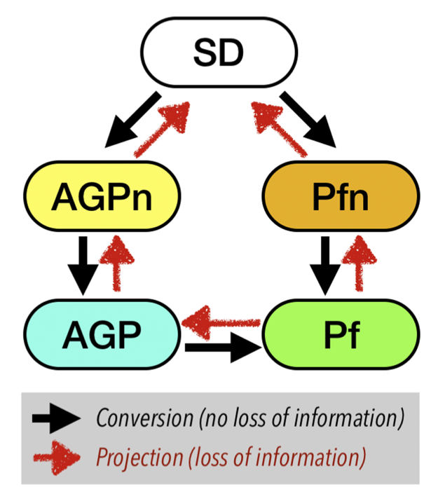

Wavefunction conversions¶
TurboRVB implements different types of Ansatz:
Pfaffian (Pf)
Pfaffian with a constrained number of molecular orbitals (Pfn)
Antisymmetrized Geminal Power (AGP)
Antisymmetrized Geminal Power with a constrained number of molecular orbitals (AGPn)
Single Slater determinant (SD)
One can go back and forth between various Ansatz using the modules implemented in TurboRVB. Figures below show the hierarchy of Ansatz implemented in TurboRVB and their inter-conversion.
 {kind=link}
{kind=link}
Adding molecular orbitals to an Ansatz (convertfort10mol.x): The first case is to add molecular orbitals to an Ansatz, i.e. JAGP => JSD, JAGP => JAGPn, or JPf => JPfn. In TurboRVB, this is done by rewriting the expansion of the geminal in terms of molecular orbitals.
The second important case is to convert an Ansatz among the available ones, i.e., JSD, JAGP, or JAGPn => JAGP. This is done using the convertfort10.x tool and is achieved by maximizing the overlap between the two WFs (the input
fort.10_inand the outputfort.10_out) to be filled by new geminal matrix coefficients (fort.10_new). The following overlap between two geminals is maximized:
max \: Q = \frac{\left \langle g^{new}|g^{ori} \right \rangle^2}{\left \langle g^{new}|g^{new} \right \rangle \left \langle g^{ori}|g^{ori} \right \rangle} \,,
in order to obtain new geminal matrix coefficients A^{new}_{\mu,\nu}, defining the new pairing function as
g^{new}(\mathbf{i}, \mathbf{j}) = \sum_{\mu.\nu} A^{new}_{\mu.\nu} \psi^{new}_\mu(\mathbf{i}) \psi^{new}_\nu(\mathbf{j}) \,,
while the original geminal was given in terms of the parameter matrix A^{ori}_{\mu, \nu},
g^{ori}(\mathbf{i}, \mathbf{j}) = \sum_{\mu.\nu} A^{ori}_{\mu.\nu} \psi^{ori}_\mu(\mathbf{i}) \psi^{ori}_\nu(\mathbf{j}) .
Note
0 \leq Q \leq 1; so, the larger the Q, the better is the conversion. Q approaches unity if the conversion is perfect.
The final case is to convert a JAGP ansatz to JPf. Since the JAGP ansatz is a special case of the JPf ansatz, where only G_{ud} and G_{du} terms are defined, the conversion can just be realized by direct substitution. The primary challenge is to find a reasonable initialization for the two spin-triplet sectors, G_{uu} and G_{dd} that are not described in the JAGP and that otherwise have to be set to 0. There are two possible approaches:
For polarized systems, we can build the G_{uu} block of the matrix by using an even number of \{ \phi_i\} and build an antisymmetric g_{uu}, where the eigenvalues \lambda_k are chosen to be large enough to occupy certainly these unpaired states, as in the standard Slater determinant used for our initialization. Again, we emphasize that this works only for polarized systems.
The second approach that also works in a spin-unpolarized case is to determine a standard broken symmetry single determinant ansatz (e.g., by TurboRVB built-in DFT within the LSDA) and modify it with a global spin rotation. Indeed, in the presence of finite local magnetic moments, it is often convenient to rotate the spin moments of the WF in a direction perpendicular to the spin quantization axis chosen for our spin-dependent Jastrow factor, i.e., the z quantization axis. In this way one can obtain reasonable initializations for G_{uu} and G_{dd}. TurboRVB allows every possible rotation, including an arbitrary small one close to the identity. A particularly important case is when a rotation of \pi/2 is applied around the y direction. This operation maps |\uparrow \rangle \rightarrow \frac{1} {\sqrt{2}} \left( | \uparrow \rangle + |\downarrow \rangle \right) \mbox{ and } |\downarrow \rangle \rightarrow \frac 1 {\sqrt{2}} \left( | \uparrow \rangle - |\downarrow \rangle \right). One can convert from a AGP the pairing function that is obtained from a VMC optimization {g_{ud}}(\mathbf{i},\mathbf{j}) = {f_S}({{\mathbf{r}}_i}, {{\mathbf{r}}_j})\frac{{\left| { \uparrow \downarrow } \right\rangle - \left| { \downarrow \uparrow } \right\rangle }}{{\sqrt 2 }} + {f_T}({{\mathbf{r}}_i},{{\mathbf{r}}_j})\frac{{\left| { \uparrow \downarrow } \right\rangle + \left| { \downarrow \uparrow } \right\rangle }}{{\sqrt 2 }} to a Pf one {g_{ud}}(\mathbf{i},\mathbf{j}) \to g\left( {\mathbf{i},\mathbf{j}} \right){\text{ }} = {f_S}({{\mathbf{r}}_i},{{\mathbf{r}}_j})\frac{{\left| { \uparrow \downarrow } \right\rangle - \left| { \downarrow \uparrow } \right\rangle }}{{\sqrt 2 }} + {f_T}({{\mathbf{r}}_i},{{\mathbf{r}}_j})\left( {\left| { \uparrow \uparrow } \right\rangle - \left| { \downarrow \downarrow } \right\rangle } \right). This transformation provides a meaningful initialization to the Pfaffian WF that can be then optimized for reaching the best possible description of the ground state within this ansatz.
Converting a WF to AGP (convertfort10.x)¶
Rename a
fort.10that you want to convert AGP asfort.10_inPrepare a template of an AGP
fort.10with new basis/new exponents… asfort.10_outRun
convertfort10.x < convertfort10.input
The output is the fort.10_new is the converted file (with maximum
overlap with the input) in the basis set you have decided in fort.10_out
The input parameters are as follows
parameter name |
datatype |
default |
description |
|---|---|---|---|
bigram |
NA |
NA |
Logical value. If set to .true., it uses RAM to store the initial file. |
symiesup |
NA |
NA |
Logical value. If set to .true., it uses symmetries for contracted orbitals in AGP. |
eqion |
NA |
NA |
Logical value. When set to .false., you can allow for a permutation of ions but the corresponding pseudo to fort.10_out has to be defined (if pseudos are used) named pseudo_out. |
parameter name |
datatype |
default |
description |
|---|---|---|---|
change_jas |
NA |
NA |
Logical value. If set to .false., it does not compute the output Jastrow (read in fort.10_out). |
change_contr |
NA |
NA |
Logical value. If set to .true., it does not compute contracted coefficient Det (read in fort.10_out). |
force_real |
NA |
NA |
Logical value. If set to .true., the output contracted orbitals are real. |
real_agp |
NA |
NA |
Logical value. If set to .true., it uses the numerical algorithm to obtain a real AGP with the maximum overlap. |
rmax |
NA |
NA |
Numeric value. It uses the numerical algorithm to obtain an AGP with a cutoff radius of rmax (bohr) and with the maximum overlap. |
max_iter |
NA |
NA |
Integer value. It represents the maximum number of iterations for the numerical algorithm (not much more than 10000 is suggested). |
prec |
NA |
NA |
Numeric value. It represents the required precision for the numerical version of the algorithm. |
epsdgel |
NA |
NA |
Numeric value. The default is 1d-15. |
yespardiag |
NA |
NA |
Logical value. If set to .true., it uses the parallelized matrix-matrix multiplication. |
parameter name |
datatype |
default |
description |
|---|---|---|---|
nx |
NA |
NA |
Numeric value. It is not necessary with optbin=.true. (the mesh is given). |
ax |
NA |
NA |
Numeric value. This is the IMPORTANT section you have always to define (the default is OK for the rest) use DFT mesh as an hint. |
nbufd |
NA |
NA |
Numeric value. You can reduce the size of nbufd for reducing the RAM memory used. |
Note
It works also with molecular orbitals. The unpaired orbitals are
always assumed to be the last molecular orbitals in the order written
in fort.10_out fort.10_in
Note
The numerical version of the algorithm (real_agp=.true. or rmax=xx) works only with AGPs, if you want to use it with molecular orbitals, convert the molecular WF in a AGP and then use the numerical version
Converting a WF to AGPn/SD (convertfort10mol.x)¶
This tool converts a generic input wf (fort.10_in) written with generic
atomic orbitals into a new wf (fort.10_new) that includes the corresponding
molecular orbitals. The unpaired orbitals are always assumed to be the last molecular orbitals in fort.10_new. The number of molecular orbitals appended in fort.10_new
is the sum of nmol (input) and the number of
unpaired orbitals= nelup-neldo.
Only the parameter molopt requires detailed explanation in this tool.
After running this tool the coefficient of the contracted atomic orbitals
are arbitrary because all the original wave function (in fort.10_in)
is rewritten (in fort.10_new) in terms of molecular orbitals defined
in the original primitive basis (e.g. all independent atomic gaussian basis
defining the original fort.10_in).
if molopt>= 2 then the coefficients of the contracted atomic orbitals will no longer be optimizable in a subsequent minimization. Otherwise all contracted atomic orbitals will be optimized with the corresponding option molopt=1 in datasminmol.input or molopt=0 (default) in datasmin.input
By using abs(molopt)>=2 this subroutine initialize the coefficients of the contracted atomic orbitals,using dmrg (the system has to represent at best the universe) to evaluate the best atomic contracted orbitals (the system) that can be connected to the full AGP matrix squared (the universe now written in terms of molecular orbitals). See the DMRG paper by S.R. White PRB 48, 10345 (1993). The algorithm is: be f(r1,r) the AGP obtained by restricting r1 to all atomic orbitals of given type (s,p,d) acting on a given atom. The density matrix is DMRG(r1,r2)=int_(r’ in universe) f(r1,r’) f(r2,r’). The best atomic orbitals are the eigenvector of the density matrix with highest eigenvalue.
In the code care should be taken because the localized basis used is not orthonormal, being the overlap matrix between atomic orbitals a generic full symmetric matrix. If unpaired orbitals are used (nelup> neldo) the DMRG is modified by adding the contribution of unpaired orbitals normalized to nelup-neldo vs a total norm = nelup+neldo.
When preparing input to DFT useful parameter input in the control section are:
only_molecular=.true./.false. ! If .true. only molecular orbitals are assumed in the contracted basis in order to minimize memory. It is not allowed for AGP optimization, rather for DFT or VMC/DMC at fixed variational parameters or optimization in the restricted molecular orbital basis.
add_offmol=.true./.false. If the above is true , add also off diagonal elements in the molecular orbital basis defined by the above option.
The input parameters are as follows:
parameter name |
datatype |
default |
description |
|---|---|---|---|
molopt |
NA |
0 |
Numeric value. If molopt>2, the best atomic contracted are evaluated using DMRG. molopt=2 for only AGP, molopt=3 for AGP and Jastrow. |
epsdgm |
NA |
1d-14 |
Numeric value. If epsdgm<0, fast routine with no diag is used. Only filling random molecular orbitals. When epsdgm=-1.0, it converts a symmagp=.true. to a symmagp=.false fort.10. |
orthoyes |
NA |
NA |
Logical value. If set to .true., orthogonalization of unpaired orbitals is employed. |
membig |
NA |
NA |
Logical value. If set to .false., coefficients of molecular orbitals are changed to allow stable optimization. |
only_molecular |
NA NA |
NA |
Logical value. If set to .true., only molecular orbitals are assumed in the contracted basis to minimize memory. It is not allowed for full AGP optimization, rather for DFT or VMC/DMC at fixed variational parameters. |
parameter name |
datatype |
default |
description |
|---|---|---|---|
ax |
NA |
0.1 |
Numeric value. Lattice mesh on the x direction, not used for PBC. |
nx |
NA |
20 |
Numeric value. Number of mesh points in the x direction to evaluate overlaps. |
ny |
NA |
NA |
Numeric value. Default is nx. |
nz |
NA |
NA |
Numeric value. Default is ny. |
nbufd |
NA |
10000 |
Numeric value. Represents buffer default. |
parameter name |
datatype |
default |
description |
|---|---|---|---|
nmol |
NA |
136 |
Numeric value. Number of molecular orbitals in fort.10 in the AGP, if nmol>0 and unpaired orbitals are present the total number of molecular orbitals in fort.10 is molecular = nmol+#unpaired orbitals (nelup-neldo) |
nmolmax |
NA |
136 |
Numeric value. Used in projection (default nmolmax=nmol). |
nmolmin |
NA |
128 |
Numeric value. The first nmolmin molecular eigenvalue are set to one. If nmolmin=nmolmax=Nel/2, a perfect Slater determinant is projected. |
printoverlap |
NA |
NA |
Logical value. If set to .true., it prints overlaps between nmolmin, nmolmax orbitals. |